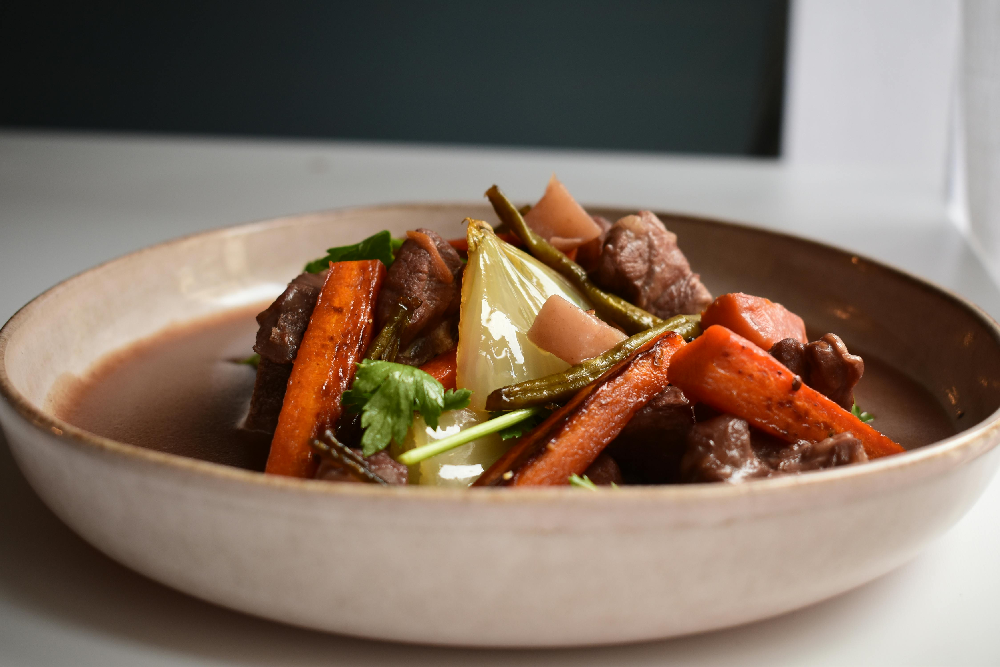

Classic Beef Stew
All Recipes

Description
This hearty beef stew is rich, satisfying, and packed with tender beef, lots of vegetables, and fragrant herbs.
Ingredients
- 1 (2 pound) boneless beef round steak, cut into 1-inch cubes
- kosher salt and cracked black pepper to taste
- ¼ cup all-purpose flour
- 1 tablespoon smoked paprika
- 1 tablespoon canola oil
- 3 cups chopped onion
- 6 cloves garlic, minced
- 4 tablespoons tomato paste
- 2 cups dry red wine
- 1 tablespoon dried thyme
- 1 tablespoon dried rosemary
- 1 tablespoon herbes de Provence
- 3 bay leaves
- 2 cups beef broth, or more as needed
- 1 tablespoon Worcestershire sauce
- 3 cups chopped carrots
- 3 cups cubed Yukon Gold potatoes
- 1 cup fresh peas
- 1 ½ teaspoons chopped fresh rosemary
- 1 teaspoon chopped fresh thyme, or to taste
Steps
- Gather all ingredients and preheat the oven to 350 degrees F (175 degrees C).
- Season beef with salt and pepper in a large bowl. Add flour and paprika and toss until evenly coated.
- Heat oil in a Dutch oven over medium-high heat. Working in batches, sear beef in hot oil, stirring occasionally, until well-browned, 10 to 11 minutes per batch. Transfer beef to a plate and leave drippings in the pot.
- Add onion to drippings; season with salt and pepper. Cook and stir until onion begins to caramelize, about 10 minutes. Add garlic and stir until fragrant, about 30 seconds.
- Stir in tomato paste; cook until it turns brown and begins to caramelize and stick to the bottom of the pan.
- Pour in red wine and bring to a boil while scraping the browned bits of food off the bottom of the pan with a wooden spoon. Cook until wine is almost evaporated, about 3 minutes.
- Add thyme, rosemary, herbes de Provence, and bay leaves. Stir in broth and Worcestershire sauce; bring to a boil.
- Return beef to the pot, then remove from heat and cover with the lid.
- Braise stew in the preheated oven until beef is almost tender, about 1 hour 30 minutes. Remove from the oven.
- Add carrots, potatoes, and more beef broth if needed. Cover the pot and return to the oven to braise until beef and vegetables are tender, about 30 minutes more.
- Discard bay leaves. Stir in peas, rosemary, and thyme. Serve hot.